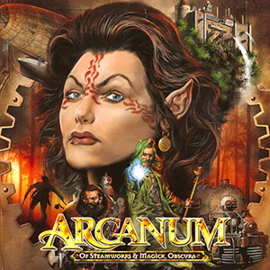

Description:
Arcanum: Of Steamworks and Magick Obscura is a 2001 role-playing video game developed by Troika Games and published by Sierra On-Line for Microsoft Windows. The game's story takes place within a fantasy setting currently undergoing a transformation from its own Industrial Revolution, in which magic competes against technological gadgets, and focuses on the efforts of a zeppelin crash survivor to find out who attacked the vessel, ultimately discovering a plot by an ancient power to return to the world and cause chaos.[3] Rendered in an isometric perspective of an open world, the game offers players the opportunity to craft their protagonist with a variety of skills, including the option to be gifted in magic or use guns and gadgets to combat enemies, and complete quests in different ways.
